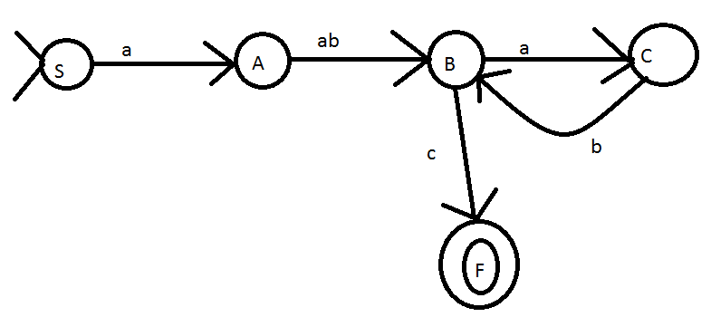
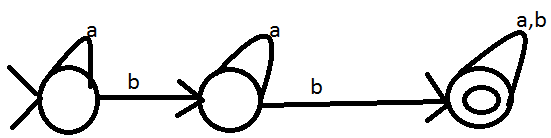
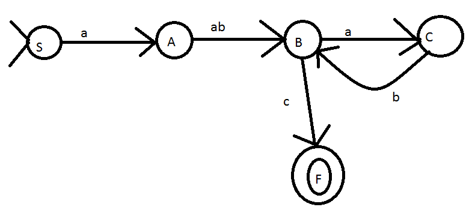
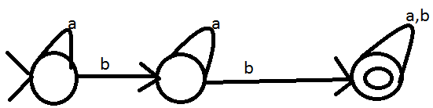

Về trang chủ
Tìm hiểu Atomat hữu hạn đơn định và không đơn định
I. Khái niệm
- Atomat hữa hạn đơn định (DFA: Deterministic Finate Auto mata)
- Atomat hữu hạn không đơn định (NFA: Non - Deterministic Finate Auto mata)
- Một ngôn ngữ chính quy được chấp nhận bởi 1FA
II. DFA
- Cấu trúc của 1 DFA: A = < Q, ∑, δ, q0, F >
Trong đó: Q là các trạng thái
∑ là ngôn ngữ
δ là hàm chuyển
q0 là trạng thái ban đầu
F là trạng thái kết thúc
- Ví dụ 1:
A = < {q0,q1}, {a}, δ,q0,q0 >
δ(q0,a) = q1; δ(q1, a) = q0
.Giải thích atomat A như sau:
+ Chúng ta có tập các trạng thái: q0,q1
+ Ngôn ngữ gồm 1 kí tự a
+ Các hàm chuyển: Từ q0 đọc vào a sẽ chuyển sang q1 và q1 đọc vào a sẽ chuyễn sang q0
+ Các trạng thái bắt đầu và kết thúc đều là q0
.Vẽ atomat trên như sau:
 + Chúng ta có trạng thái mở đầu và kết thúc là q0 nên có 2 vòng tròn. Vòng nhỏ là bắt đầu vòng lớn là kết thúc
. Ngôn ngữ của atomat trên là: L = {a2n}
. Từ atomat trên chúng ta có thể biết được các văn phạm của nó:
+ S0 -> aS1 | ε
+ S0 -> aS1
+ S1 -> aS0
+ aS1 -> aaS0 -> aa
- Ví dụ 2:
S -> aA
A -> abB
B -> aC | c
C -> bB
. Từ các văn phạm trên chúng ta sẽ vẽ atomat như sau:

- Có hàm chuyển -> Vẽ được FA
- Có văn phạm -> Vẽ được FA
- Có ngôn ngữ chính quy / biểu thức chính quy -> vẽ được FA
- Ví dụ 3: Có R vẽ FA: 10* + 01*
- Ví dụ 4: FA -> R
(a + b)* d (a + b)
- Ví dụ 5: L -> FA
+ a. L1= {∀w ∈ {a,b}* có ít nhất 2b}

+ b. L1= {∀w ∈ {a,b}* có chính xác 2b}
+ c. L1= {∀w ∈ {a,b}* có số lượng từ a là chẵn}
+ Chúng ta có trạng thái mở đầu và kết thúc là q0 nên có 2 vòng tròn. Vòng nhỏ là bắt đầu vòng lớn là kết thúc
. Ngôn ngữ của atomat trên là: L = {a2n}
. Từ atomat trên chúng ta có thể biết được các văn phạm của nó:
+ S0 -> aS1 | ε
+ S0 -> aS1
+ S1 -> aS0
+ aS1 -> aaS0 -> aa
- Ví dụ 2:
S -> aA
A -> abB
B -> aC | c
C -> bB
. Từ các văn phạm trên chúng ta sẽ vẽ atomat như sau:

- Có hàm chuyển -> Vẽ được FA
- Có văn phạm -> Vẽ được FA
- Có ngôn ngữ chính quy / biểu thức chính quy -> vẽ được FA
- Ví dụ 3: Có R vẽ FA: 10* + 01*
- Ví dụ 4: FA -> R
(a + b)* d (a + b)
- Ví dụ 5: L -> FA
+ a. L1= {∀w ∈ {a,b}* có ít nhất 2b}

+ b. L1= {∀w ∈ {a,b}* có chính xác 2b}
+ c. L1= {∀w ∈ {a,b}* có số lượng từ a là chẵn}